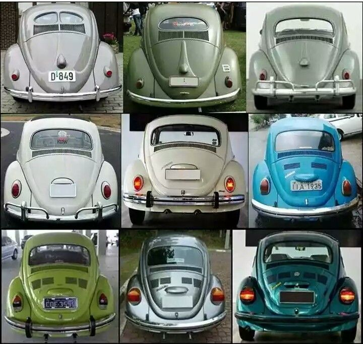
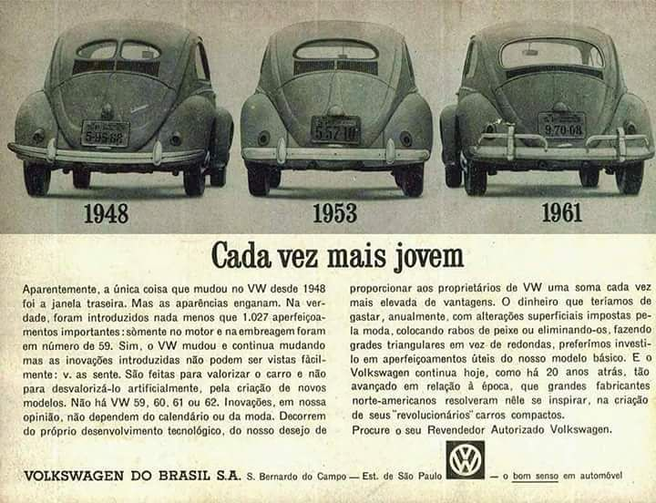
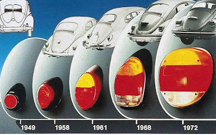

História do Fusca
Fotos
peças e acessório
A história do Fusca é longa, começando na Alemanha de antes da Segunda Guerra Mundial, mas ninguém imaginava que
ele se tornaria um clássico atemporal. O design clássico arredondado e o motor boxer são velhos conhecidos do
público brasileiro. Aliás, O dia nacional do Fusca é comemorado dia 20 de janeiro, tamanha é a relação do modelo
com a história automotiva do nosso País. E por falar em história, a do Fusca é longa e o carro rodou o mundo
com inúmeros nomes. Os alemães chamam de Käfer, os norte-americanos de Beetle e os portugueses de Carocha. É o
modelo único mais produzido da história e conta com seus mais de 60 anos de produção marcados por 21 milhões de
unidades. O modelo “teve filhos”, veículos que foram derivados da tecnologia do velho besouro. Entre eles,
conhecidos dos consumidores tupiniquins, como Karmann Ghia, Variant e Kombi. No entanto, isso também inclui
“crias” de outras marcas do Grupo Volkswagen, como os carros da linha Porsche. O clássico da Volkswagen tem
tantos adeptos que os chineses criaram sua própria versão: o Ballet Cat, um veículo elétrico com o design
similar. Mas afinal, qual é a história do carro que virou febre no mundo? Você vai descobrir nos próximos
tópicos! Boa leitura! A origem do Fusca é um tanto controversa. O projeto começou a ganhar vida ainda nos anos
1930, durante o regime hitlerista. Hitler estava focado em levar a Alemanha um nível de modernidade compatível
com as grandes potências mundiais. Por exemplo, com a introdução de tecnologias como o rádio — chamado de
“Receptor do Povo”, ou “Volksempgänger”. Nesse, era impossível sintonizar rádios estrangeiras. A mesma lógica
se aplicou à geladeira, chamada de “Refrigerador do Povo”, ou “Volkskühlschrank”. Assim, o regime lançava várias
tecnologias rebatizando com um nome que fazia sentido para manter sua política ufanista. O Carro do Povo
(Volkswagen, o nome original do Fusca que também batizou a marca alemã) originalmente surgiu com esse pretexto.
O país contava com uma sociedade pouco motorizada e com veículos acessíveis apenas à burguesia alemã. Por isso,
Hitler encomendou o projeto ao projetista Ferdinand Porsche. A ideia era criar um carro acessível, barato e que
cumprisse algumas exigências curiosas, a exemplo, a capacidade de levar uma metralhadora montada no capô.
tanpa traseira

propaganda

forois
